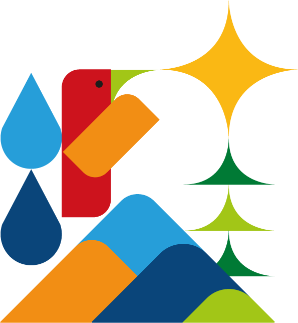

Bienvenido a Cantares
Español
English

Cantares
Reserva Natural
🔍
👤
EN
×
◎
Leyenda
▾
🌳
2024
▾
El bosque en el tiempo
Desliza para ver crecer el bosque
×
Restauración
🌳 Carbono capturado
🌿 Reverdecimiento (NDVI)
🛰️ Antes / después (ortofoto)
Especies
📷
Identificar planta
Pl@ntNet
🐦
Identificar ave
Merlin
🔬
Sumar al inventario
iNaturalist
La Reserva
Ecosistema
Biodiversidad
Clima
Restauración
Agua
Registro
Mapa ilustrado de senderos
🥾
Recorridos
🌱
Restauración
🦋
Especies
ℹ️
Info